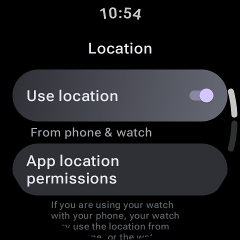

Einer der größten Vorteile des Besitzes einer modernen Wear OS-Smartwatch ist die Freiheit, Ihr Telefon beim Outdoor-Training zurückzulassen. Egal, ob Sie für einen Marathon trainieren oder auf Wochenendwegen wandern, Ihre Smartwatch kann theoretisch Ihr Tempo, Ihre Höhenmeter und die Streckenkarte unabhängig verfolgen. Allerdings ist „theoretisch“ das Stichwort. Eine häufige Beschwerde unter Google Pixel Watch- und Samsung Galaxy Watch-Nutzern sind GPS-Ungenauigkeiten – bei Läufen werden Routen angezeigt, die direkt durch feste Gebäude führen, Fitness-Apps verlieren mitten im Training das Signal oder die Uhr braucht fünf bis zehn Minuten, um eine anfängliche GPS-Sperre zu sichern.
Da Smartwatch-Gehäuse klein sind, sind die darin enthaltenen GPS-Antennen winzig und können leicht durch Ihr Handgelenk, Ihre Kleidung oder die Umgebung verdeckt werden. Schauen wir uns die Mechanismen der Smartwatch-Standortdienste an und erläutern, wie Sie GPS-Abweichungen beheben, Standortsperren beschleunigen und die Tracking-Genauigkeit auf Ihrem Wear OS-Gerät verbessern können.

Tethered vs. Standalone GPS: Wie Wear OS Daten weiterleitet
Vielen Benutzern ist nicht bewusst, dass Wear OS-Smartwatches tatsächlich zwei verschiedene Modi zum Sammeln von Standortdaten verwenden. Für die Behebung von Genauigkeitsproblemen ist es von entscheidender Bedeutung, zu verstehen, wie diese Modi wechseln.
- Angebundenes GPS (mit Telefon verbunden): Wenn sich Ihr Telefon beim Starten einer Outdoor-Aktivität in Bluetooth-Reichweite befindet, schaltet Ihre Smartwatch den internen GPS-Empfänger aus und fordert Koordinaten von Ihrem Telefon an. Dies geschieht, um die Batterielebensdauer der Uhr zu verlängern. Wenn die Ortungsdienste Ihres Telefons jedoch nicht optimiert sind oder das Telefon tief in einem Rucksack vergraben ist, wird die von der Uhr aufgezeichnete Route beeinträchtigt.
- Eigenständiges GPS (nicht verbunden): Wenn Sie ohne Ihr Telefon laufen, schaltet Ihre Uhr das interne GPS-Radio ein. Dieses Funkgerät verbraucht viel Batteriestrom und muss eine direkte Sichtverbindung mit mehreren Satelliten im Orbit herstellen.
Häufige GPS-Szenarien und Umgebungsfehler
Die Qualität Ihres GPS-Sperres hängt stark von Ihrer Umgebung und Ihren Einstellungen ab. Nachfolgend finden Sie einen Vergleich typischer Umgebungen und deren Auswirkungen auf die Standortgenauigkeit der Smartwatch:
| Umfeld | GPS-Leistung | Häufiges Problem | Problemumgehung |
|---|---|---|---|
| Offenes Feld / Park | Ausgezeichnet (5-15s Sperre) | Keine, starke Sichtlinie. | Am besten für den Einstieg ins Training geeignet. |
| Urban Canyon (Wolkenkratzer) | Schlecht (60er+ Sperre) | Mehrwegereflexion von Signalen an Gebäuden. | Aktivieren Sie die Standortgenauigkeit von Google. |
| Dichter Wald / Blätterdach | Moderat (30–45 Sek. Sperre) | Signalabsorption durch nasses Laub. | Tragen Sie das Zifferblatt nach außen zeigend. |
| Bewölktes/stürmisches Wetter | Leicht verschlechtert | Atmosphärische Dämpfung. | Warten Sie, bis das Schlosssymbol stabil ist, bevor Sie fortfahren. |
So beheben Sie GPS-Fehler unter Wear OS
Befolgen Sie diese Schritte, um die Standorteinstellungen Ihrer Uhr neu zu kalibrieren und Tracking-Verzögerungen zu beheben:
1. Aktivieren Sie die Standortgenauigkeit von Google (Modus mit hoher Genauigkeit).
Wear OS nutzt Google Location Services, um die Satellitenerfassung zu beschleunigen. Anstatt sich ausschließlich auf orbitale Satelliten zu verlassen, nutzt Google lokale WLAN-Router-Netzwerke und Mobilfunkmast-IDs, um Ihren ungefähren Standort sofort zu bestimmen, sodass die GPS-Antenne in Sekundenschnelle auf Satelliten zugreifen kann.
Um dies zu aktivieren: Gehen Sie zu Einstellungen > Standort auf Ihrer Uhr und schalten Sie es ein Google-Standortgenauigkeit (Oder stellen Sie sicher, dass der Standortmodus auf „Hohe Genauigkeit“ eingestellt ist).
2. Löschen Sie den Standort-Cache und erzwingen Sie die A-GPS-Synchronisierung
Smartwatches verwenden „Assisted GPS“ (A-GPS)-Dateien, die Satellitenflugbahndaten (Ephemeriden- und Almanachdaten) enthalten. Diese Daten werden über Ihr Telefon aus dem Internet heruntergeladen und sagen Ihrer Uhr genau, wo sie nach Satelliten suchen muss. Wenn diese Daten beschädigt oder veraltet sind, dauert es lange, bis die Uhr den Himmel durchsucht.
Um die Aktualisierung von A-GPS zu erzwingen, halten Sie Ihre Uhr über Bluetooth mit Ihrem Telefon verbunden, öffnen Sie die begleitende Wearable-App und stellen Sie sicher, dass Ihre Uhr erfolgreich synchronisiert wird. Alternativ können Sie die Uhr neu starten, während eine WLAN-Verbindung besteht, um eine neue Hintergrundaktualisierung der Satellitenalmanachdateien auszulösen.
Profi-Tipp: Der „Pre-Workout-Stillstand“
Beginnen Sie niemals sofort mit dem Laufen oder Radfahren, nachdem Sie in Ihrer Trainings-App auf „Start“ getippt haben. In fast allen Apps (wie Strava, Samsung Health oder Fitbit) blinkt das GPS-Symbol im Countdown-Bildschirm, während nach einem Signal gesucht wird, und leuchtet durchgehend grün, wenn eine Sperre erreicht wurde. Wenn Sie mit der Bewegung beginnen, bevor das Symbol durchgehend leuchtet, muss die Uhr bei der Suche nach Satelliten Doppler-Verschiebungen berechnen, wodurch die Sicherung einer Sperre dreimal länger dauert. Bleiben Sie in einem offenen Bereich stehen, bis die GPS-Anzeige dauerhaft leuchtet.
3. Deaktivieren Sie die Energiesparbeschränkungen
Wenn Sie den Batteriesparmodus aktiviert oder die Hintergrundaktivität auf Ihrer Uhr eingeschränkt haben, drosselt das System die GPS-Abfragefrequenz. Anstatt Ihre Koordinaten jede Sekunde zu überprüfen, überprüft es möglicherweise nur alle 10 oder 15 Sekunden und erstellt so gerade Linien, die durch Ecken auf Ihren Trainingskarten schneiden. Deaktivieren Sie den Energiesparmodus im Bereich „Schnelleinstellungen“, bevor Sie Outdoor-Aktivitäten starten.
4. Passen Sie den Tragestil und die Kleidung an
GPS-Antennen von Smartwatches sind in der Regel direkt unter dem Bildschirmrahmen positioniert. Wenn Sie dicke Winterjacken oder Metallarmbänder tragen, können diese die Funksignale blockieren. Versuchen Sie, die Uhr etwas höher am Handgelenk zu tragen und stellen Sie sicher, dass der Bildschirm während des Trainings dem Himmel ausgesetzt ist.
Zusammenfassung
GPS-Tracking-Fehler werden in der Regel durch veraltete A-GPS-Dateien oder durch Bewegungen verursacht, bevor eine solide Satellitenverbindung gesichert ist. Indem Sie sicherstellen, dass die Google-Standortgenauigkeit aktiviert ist, Sie vor dem Lauf 30 Sekunden lang still stehen und den Batteriesparmodus deaktivieren, können Sie ein perfektes, genaues Wegverfolgungserlebnis auf Ihrer Wear OS-Uhr garantieren.